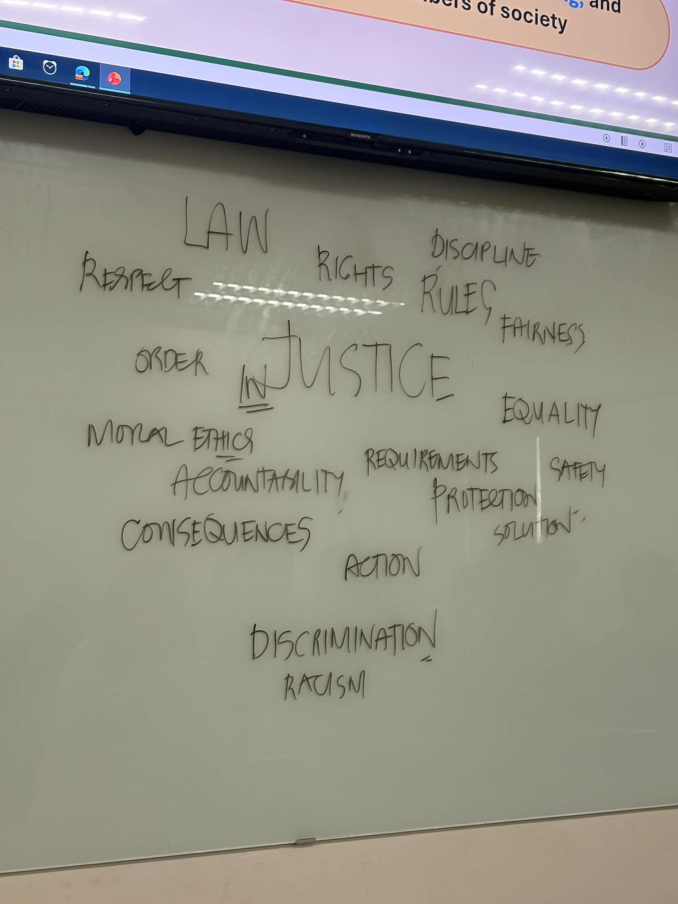
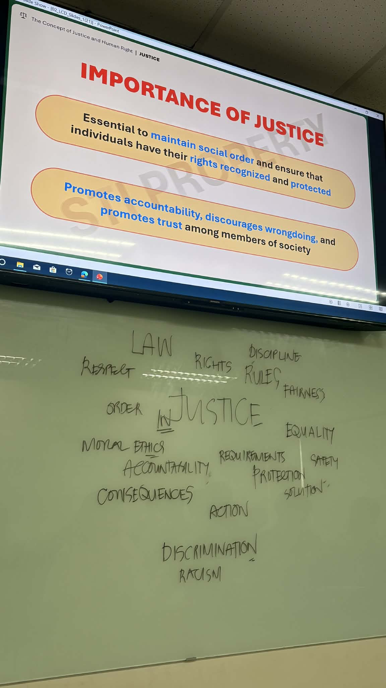
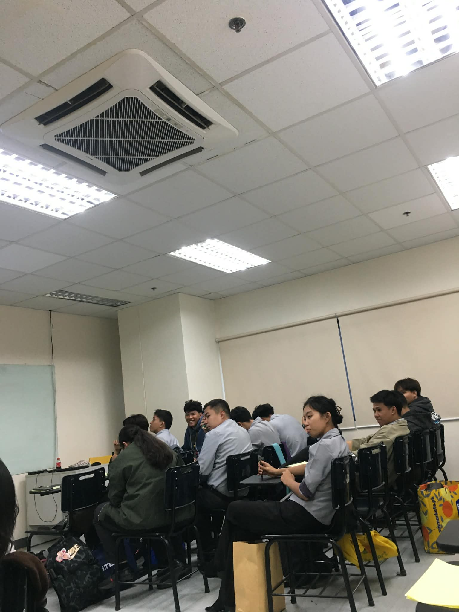
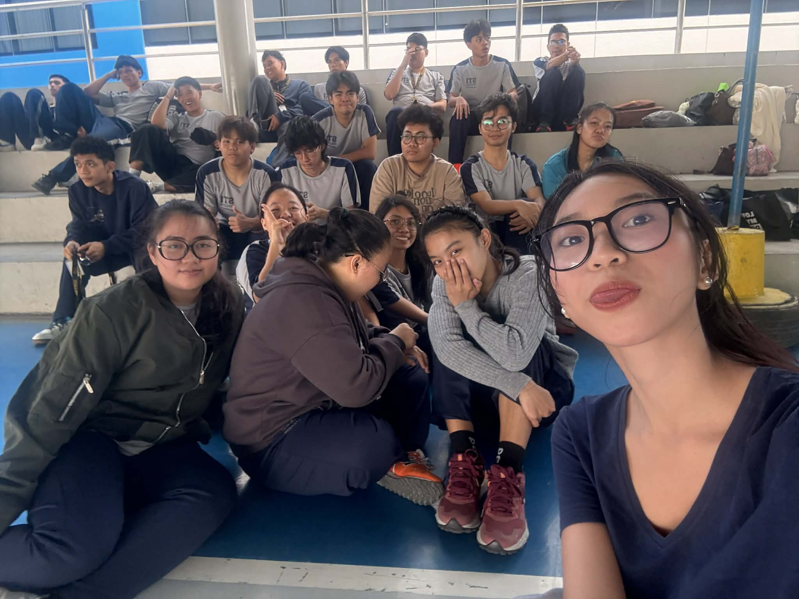

Everyday Justice: A Weight I Didn't Expect
Ma'am Delos Reyes said that justice isn't just for criminals—it lives in our hallways, our friendships, and our daily choices. But what happens when that kind of justice isn't fair? This is the story of a lesson that changed how I see the world, and the unexpected weight that came with it.
Situation & Experience
Lahat ng discussion namin sa Ethics, talagang may matutunan ka, sobrang ganda talaga kung paano ipaunawa samin ni ma'am yung lesson, from Introduction of Ethics up until Justice. I've realized how lucky I am to be able to attend Ma'am Delos Reyes's class every session. ayaw ko rin kase na mamissed ko yun. I am so happy for the first team nailabas ko yung lungkot ko about sa ginawa ko as representative na isumbong yung cheating, nailabas ko siya through activity about key branches of Ethics (such as Normative, Metaethics and Applied) under po nong Applied, sinabi ko yun, because I knew It is my job as representative to do that. But this journal wasn't focused on that. On February 8, after the discussion of Moral Theories (Consequentialism, Deontology, Virtue Ethics), Ma'am introduced the new topic which is 'Justice'. She asked us how we can define justice, and each of us gave a word associated with it. Ang unang pumasok sa isip ko ay "only rich people can afford" because that's how the reality works, kahit ayaw pa natin. Since my classmates gave a positive word, I also gave the word 'Rules'. But after we gave our words, Ma'am pointed out that justice is not only invoked when someone is killed, r*ped, or when actions lead to the destruction of someone—it should be present in our everyday lives. That's when it struck me. Kase ang nasa isip namin while giving the definition of Justice is always derive from that situation called crime. pero hindi pala, dapat lagi tayong meron nito, at hindi to yung tipo na dapat hinihingi lang natin lagi, dapat if tayo yung nakagawa ng mali, we should be the who gave justice don sa tao na yun. Imagine if lahat ng tao responsible and know justice very well, edi sana hindi tayo nagkakagulo ngayon. Ang sakit lang na itong discussion na to ay nagpabalik sakin don sa situation when I spoke up about the cheating issue, I knew I was being bullied by them—especially by those involved—and I never asked for justice. Kase akala ko inaask lang to kapag matindi yung nagawa.
Emotional Response
After that discussion, lahat ay bumalik sakin. Lahat nong sakit, inis, galit, Because I chose to stay silent despite sa mga simpleng banat nila. But I have to remain calm and just process everything, baka naguluhan lang ako or maybe mad kase nga hindi ko nakuha yung justice na need ko, yung issue na yun humupa, and those students involved never received any punishment. Andami ko kayang sinacrifice don, isa na yung trust nila sakin as representative, also yung bond na naubo nag fade away na, since nahati rin kami ng side, may ilan nagsabi na mabuti daw yung ginawa ko, kase nga daw naman sobra na, gumagamit ng cellphone while taking examination ay mali talaga, and then they are justifying those actions, na kaya daw nila nagawa yun kase gusto nilang mag survive, likee whatt?? paano naman yung ibang classmate namin na piniling mag aral at paghirapan yung scores nila, tsaka some of them are saying, tanggap nila na babagsak sila, I really want to help them, kaso wala ring time. Pero sila na nag cheat to survive?? sobrang unfair talaga non. Tapos ako pa ang nagmukhang masama sa iba, kase snitch daw ako HUHUHUHU pero kahit na ganon I will still stand on my core, lalo na at representative ako that time, applied ethics ko yun. kahit na ibalik ako sa ganoong situation, magsusumbong pa rin ako. Kaya naman namin mag tulungan e, nakikita nga rin po ni Collo yun e, pero wala e, ibang way yung pinupursue nila.
SEL Insight
That discussion served as a lesson in social awareness and responsible decision-making. Before, I thought justice was only for people who committed crimes—but no, it should be upheld by everyone and practiced in our everyday lives.
Aside from what I experienced, I've also witnessed injustices in other places: on social media platforms, on TV, within circles of friends, and even here at STI. Injustices happen around us, and we should be aware of them. We should fight for what is rightfully ours.
As for responsible decision-making, after that discussion, I decided to remain calm and process everything that happened—because I knew that was also my responsibility. We should be responsible lalo na sa mga desisyon natin sa buhay. As a student proper decision making is a must, sa mga activity na pwedeng mamissed or sa course na pwedeng bumagsak dapat bigyang hustisya natin yun, by making the right decision in life.
Personal Reflection
I learned a lot of lessons because Ma'am involved real-life scenarios. Also, this lesson stood out to me because, before, the topic of justice often felt shallow—just its definition and importance written on the page. But Ma'am gave us a wonderful and impactful meaning of justice. This discussion was so meaningful, and it's one I will never forget. So many lessons came up, and it brought back a lot of memories. I just hope that we will truly achieve justice. Even if I didn't receive it before, that's okay—I just hope that no one else has to experience the same thing. To those who manipulate or buy justice, I hope you face the consequences meant for you, and to those who have never been given justice, I hope you finally receive the true justice you deserve. Let us fight for what is ours. We should also be mindful of our actions, because they affect one another. Let us remember that justice is within us—not only for those who hold power. We can still change the world; we just need to take that first step.
Visual Documentation





Middle Term
Available March 2026
Prefinal Term
Available April 2026
Final Term
Available May 2026
Midterm Journal
This section will unlock at the start of midterm period
Expected: March 2026Prefinal Journal
This section will unlock at the start of prefinal period
Expected: April 2026Final Journal
This section will unlock at the start of final period
Expected: May 2026